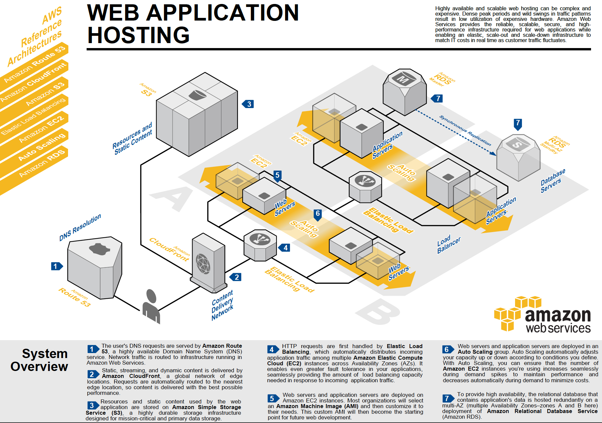
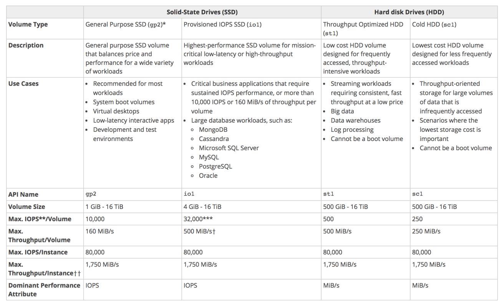
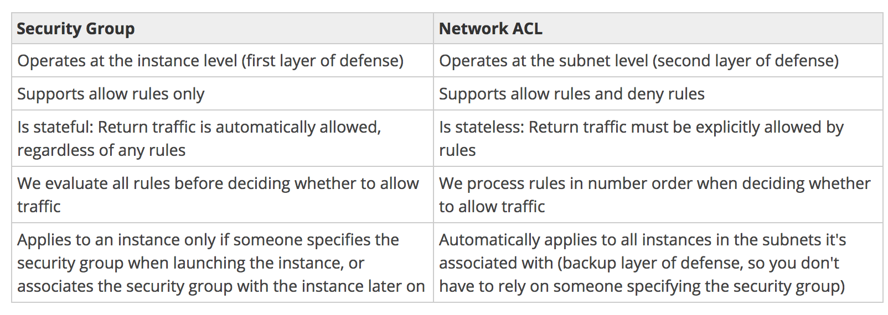

Test Report
Review questions
Jun 17, 2019 02:58AM EDT
 14 correct
14 correct 51 incorrect
51 incorrectYour answer
B. Implement Custom metrics for CloudWatch
C. Use CloudWatch metrics for EC2 instances
D. Use a Third-party monitoring solution
Correct answer is B as Memory and Disk swap utilization is not covered by CloudWatch out of the box metrics and need to be implemented using custom metrics.
Refer AWS documentation - EC2 Monitoring
Memory utilization, disk swap utilization, disk space utilization, page file utilization, log collection | [Linux and Windows Server instances] Collect Metrics and Logs from Amazon EC2 Instances and On-Premises Servers with the CloudWatch Agent [Migration from previous CloudWatch Logs agent on Windows Server instances] Migrate Windows Server Instance Log Collection to the CloudWatch Agent |
Your answer
B. Amazon Relational Database Service (RDS)
C. Amazon CloudWatch
D. Amazon ElastiCache
E. Amazon DynamoDB
F. AWS Storage Gateway
D. Amazon ElastiCache
E. Amazon DynamoDB
Correct answer are B, D & E as RDS, ElastiCache and DynamoDB can be used for storing state data.
Option A is wrong as ELB is mainly for load balancing.
Option C is wrong as CloudWatch is for monitoring and metrics
Option F is wrong as Storage gateway is mostly for backups and archival
Refer to Storage Options Whitepaper
Your answer
B. Use Stages
C. Use Swagger Extensions
D. Use SSL Certificates
Correct answer is D as SSL certificates can be used to help backend system authenticate and verify the HTTP requests are being initiated from API Gateway.
Refer AWS documentation - API Gateway SSL Authentication
You can use API Gateway to generate an SSL certificate and use its public key in the backend to verify that HTTP requests to your backend system are from API Gateway. This allows your HTTP backend to control and accept only requests originating from Amazon API Gateway, even if the backend is publicly accessible.
Option A is wrong as CORS enable cross domain access to API’s
Option B is wrong as Stages help deploy multiple API versions
Option C is wrong as Swagger helps in API documentation.
Your answer
B. Modify bucket policy on CSS bucket to able to access website bucket
C. Modify bucket policy on website bucket to able to access CSS bucket
D. This is not possible
Correct answer is A as CORS would allow the website to access the CSS files from another bucket.
Refer AWS documentation - S3 CORS
Cross-origin resource sharing (CORS) defines a way for client web applications that are loaded in one domain to interact with resources in a different domain. With CORS support in Amazon S3, you can build rich client-side web applications with Amazon S3 and selectively allow cross-origin access to your Amazon S3 resources.
Points : 3 out of 3
Your answer
B. Convertible Reserved Instances.
C. Standard Reserved Instances.
D. Spot Instances
Correct answer is C as the key requirement is constant 24x7 usage without elasticity, standard reserved instances would be a perfect fit.
• Standard RIs: These provide the most significant discount (up to 75% off On-Demand) and are best suited for steady-state usage.
• Convertible RIs: These provide a discount (up to 54% off On-Demand) and the capability to change the attributes of the RI as long as the exchange results in the creation of Reserved Instances of equal or greater value. Like Standard RIs, Convertible RIs are best suited for steady-state usage.
• Scheduled RIs: These are available to launch within the time windows you reserve. This option allows you to match your capacity reservation to a predictable recurring schedule that only requires a fraction of a day, a week, or a month.
Scheduled Reserved Instances (Scheduled Instances) enable you to purchase capacity reservations that recur on a daily, weekly, or monthly basis, with a specified start time and duration, for a one-year term. You reserve the capacity in advance, so that you know it is available when you need it. You pay for the time that the instances are scheduled, even if you do not use them.
Scheduled Instances are a good choice for workloads that do not run continuously, but do run on a regular schedule. For example, you can use Scheduled Instances for an application that runs during business hours or for batch processing that runs at the end of the week.
If you require a capacity reservation on a continuous basis, Reserved Instances might meet your needs and decrease costs.
Option A is wrong as instances are needed 24x7.
Option B is wrong as elasticity is not required.
Option D is wrong as Spot instances would not provide High Availability.
Your answer
B. Locating HSM appliances closest to the majority of potential customers decreases network latency, which can improve application performance
C. Locating HSM appliances near your EC2 instances decreases network latency, which can improve application performance
D. Locating HSM appliances completely isolated from your EC2 instances in another region increases security
Correct answer is C as CloudHSM should be placed close to the EC2 instances.
Refer AWS documentation - CloudHSM
CloudHSM instances are provisioned inside your VPC with an IP address that you specify, providing simple and private network connectivity to your Amazon Elastic Compute Cloud (EC2) instances. Placing CloudHSM instances near your EC2 instances decreases network latency, which can improve application performance. AWS provides dedicated and exclusive (single tenant) access to CloudHSM instances, isolated from other AWS customers. Available in multiple Regions and Availability Zones (AZs), AWS CloudHSM allows you to add secure and durable key storage to your applications.
Your answer
B. Status Code where most status codes are the same.
C. Device ID, where one is by far more popular than all the others.
D. Game Type, where there are three possible game types.
Correct answer is A - User id as when designing a primary key, there needs to be an attribute which is always unique so that the hash of it is maintained.
Refer AWS documentation - DynamoDB Guidelines
The primary key uniquely identifies each item in a table. The primary key can be simple (partition key) or composite (partition key and sort key).
When it stores data, DynamoDB divides a table's items into multiple partitions, and distributes the data primarily based upon the partition key value. Consequently, to achieve the full amount of request throughput you have provisioned for a table, keep your workload spread evenly across the partition key values. Distributing requests across partition key values distributes the requests across partitions.
Points : 3 out of 3
Your answer
B. Schedule Auto Scaling to scale up by 8 AM Thursday and scale down after 6 PM on Friday
C. Schedule a policy which may scale up every day at 8 AM and scales down by 6 PM
D. Configure a batch process to add an instance by 8 AM and remove it by Friday 6 PM
Correct answer is B as an Auto Scaling schedule can be configured to automate the scale up and down activities.
Refer AWS documentation - Scheduled Scaling
Your answer
B. Upload to a second bucket and have a Lambda event copy the image to the primary bucket.
C. Upload to a separate Auto Scaling group of servers behind an ELB Classic Load Balancer and have them write to the Amazon S3 bucket.
D. Expand the web server fleet with Spot Instances to provide the resources to handle the images.
Correct answer is A as a pre-signed url would help the images to be directly uploaded to the S3 bucket without being routed through the web servers, thereby reducing the load.
Refer AWS documentation - S3 Pre-Signed URLs
A presigned URL gives you access to the object identified in the URL, provided that the creator of the presigned URL has permissions to access that object. That is, if you receive a presigned URL to upload an object, you can upload the object only if the creator of the presigned URL has the necessary permissions to upload that object.
Option B is wrong as the upload still needs to happen through the Web servers
Option C is wrong as it is not most efficient and would increase the cost.
Option D is wrong as spot instances availability cannot be predicted and maybe reduce the load, but still increase the cost.
Points : 3 out of 3
Your answer
B. Encrypt using AWS KMS Customer Default master key.
C. Encrypt using SSL/TLS for encrypting the data.
D. Encrypt using S3 Server Side Encryption.
Correct answer is B as Redshift allows encryption of cluster using KMS.
Refer AWS documentation - Redshift Encryption
In Amazon Redshift, you can enable database encryption for your clusters to help protect data at rest. Amazon Redshift uses a hierarchy of encryption keys to encrypt the database. You can use either AWS Key Management Service (AWS KMS) or a hardware security module (HSM) to manage the top-level encryption keys in this hierarchy. The process that Amazon Redshift uses for encryption differs depending on how you manage keys.
By default, Amazon Redshift selects your default key as the master key. Your default key is an AWS-managed key that is created for your AWS account to use in Amazon Redshift. AWS KMS creates this key the first time you launch an encrypted cluster in a region and choose the default key.
If you don’t want to use the default key, you must have (or create) a customer-managed CMK separately in AWS KMS before you launch your cluster in Amazon Redshift. Customer-managed CMKs give you more flexibility, including the ability to create, rotate, disable, define access control for, and audit the encryption keys used to help protect your data.
Your answer
B. Use Amazon S3 multipart upload
C. Leveraging Amazon CloudFront, use the HTTP POST method to reduce latency.
D. Use Amazon Elastic Block Store Provisioned IOPS and use an Amazon EBS-optimized instance
Correct answer is B as Multipart upload allows you to upload a single object as a set of parts and in parallel. Each part is a contiguous portion of the object's data. You can upload these object parts independently and in any order. If transmission of any part fails, you can retransmit that part without affecting other parts. After all parts of your object are uploaded, Amazon S3 assembles these parts and creates the object. In general, when your object size reaches 100 MB, you should consider using multipart uploads instead of uploading the object in a single operation.
Refer to AWS documentation for S3 Multipart upload
Option A & D is wrong as enhanced networking, IOPS, EBS optimized helps improve the performance within the AWS network for the EC2 instances
Option C is wrong as CloudFront allows uploading objects from global locations a bit smoother but would not improve the S3 upload time
Your answer
B. Use IAM roles on the Amazon ECS container instances to associate IAM role with each ECS task on that instance
C. Connect to each running amazon ECS container instance and add discrete credentials
D. Reboot each Amazon ECS task programmatically to generate new instance metadata for each task
Correct answer is A as IAM role needs to be associated with the ECS task definition.
Refer AWS documentation - ECS Task IAM Role
With IAM roles for Amazon ECS tasks, you can specify an IAM role that can be used by the containers in a task. Applications must sign their AWS API requests with AWS credentials, and this feature provides a strategy for managing credentials for your applications to use, similar to the way that Amazon EC2 instance profiles provide credentials to EC2 instances. Instead of creating and distributing your AWS credentials to the containers or using the EC2 instance’s role, you can associate an IAM role with an ECS task definition or RunTask API operation. The applications in the task’s containers can then use the AWS SDK or CLI to make API requests to authorized AWS services.
Points : 3 out of 3
Your answer
B. NAT instance
C. ELB Classic Load Balancer
D. Amazon RDS
Correct answer is B as NAT Instance is a single point of failure and does not have High Availability. You can use NAT Gateway instead or manage high availability through scripts.
Refer AWS documentation - NAT Gateway vs NAT Instance
Option A is wrong as EC2 instances are evenly deployed across multiple AZs.
Option C is wrong as ELB is AWS managed and Highly Available.
Option D is wrong as RDS is Multi-AZ configured.
Your answer
B. Enable KMS Audit Feature
C. Use CloudTrail
D. Use KMS Certificate Manager
Correct answer is C as CloudTrail helps audit all calls to AWS Key Management Service (KMS)
Refer AWS documentation - KMS CloudTrail
AWS KMS is integrated with CloudTrail, a service that captures API calls made by or on behalf of AWS KMS in your AWS account and delivers the log files to an Amazon S3 bucket that you specify. CloudTrail captures API calls from the AWS KMS console or from the AWS KMS API. Using the information collected by CloudTrail, you can determine what request was made, the source IP address from which the request was made, who made the request, when it was made, and so on. To learn more about CloudTrail, including how to configure and enable it, see the AWS CloudTrail User Guide.
When you enable CloudTrail logging in your AWS account, API calls made to AWS KMS actions are tracked in log files. AWS KMS records are written together with other AWS service records in a log file. CloudTrail determines when to create and write to a new log file based on a time period and file size.
CloudTrail logs all of the AWS KMS actions. For example, calls to the CreateKey, Encrypt, and Decryptactions generate entries in the CloudTrail log files.
Your answer
B. Assign a minimum of two elastic network interfaces per Amazon EC2 Instance
C. Launch the Amazon EC2 instance across multiple Availability Zones
D. Enable EBS optimization on all the Amazon EC2 instances
Correct answer is A as for high-performance you would need to enable enhanced networking.
A cluster placement group is a logical grouping of instances within a single Availability Zone. Placement groups are recommended for applications that benefit from low network latency, high network throughput, or both. To provide the lowest latency, and the highest packet-per-second network performance for your placement group, choose an instance type that supports enhanced networking.
Refer AWS documentation - Placement Groups & Enhanced Networking
Points : 3 out of 3
Your answer
B. Use an Amazon RDS read replica of the production database and allow the team to query against it.
C. Use multiple Amazon EC2 instances running replicas of the production database, placed behind a load balancer.
D. Use an Amazon DynamoDB table to store a copy of the data.
Correct answer is B as Read replica can help in business reporting kind of use cases for allowing users to query the data without impacting the production database.
Refer AWS documentation - Read Replica
Deploying one or more Read Replicas for a given source DB instance might make sense in a variety of scenarios, including the following:
- Scaling beyond the compute or I/O capacity of a single DB instance for read-heavy database workloads. You can direct this excess read traffic to one or more Read Replicas.
- Serving read traffic while the source DB instance is unavailable. If your source DB instance can't take I/O requests (for example, due to I/O suspension for backups or scheduled maintenance), you can direct read traffic to your Read Replicas. For this use case, keep in mind that the data on the Read Replica might be "stale" because the source DB instance is unavailable.
- Business reporting or data warehousing scenarios where you might want business reporting queries to run against a Read Replica, rather than your primary, production DB instance.
- Implementing disaster recovery. You can use promote a Read Replica to a standalone instances as a disaster recovery solution if the source DB instance fails.
Your answer
B. Configure automatic backup to save cache data
C. Configure ElastiCache Multi-AZ with automatic failover.
D. Use Auto Scaling to provision cache nodes based on the CPU usage.
Correct answer is C as ElastiCache Multi-AZ helps handle node failure and provide enhanced availability without any administration need.
Refer AWS documentation - ElastiCache - Redis Multi-AZ
Q: What is Multi-AZ for ElastiCache for Redis?
An ElastiCache for Redis shard consists of a primary and up to five read replicas. Redis asynchronously replicates the data from the primary to the read replicas. During certain types of planned maintenance, or in the unlikely event of ElastiCache node failure or Availability Zone failure, Amazon ElastiCache will automatically detect the failure of a primary, select a read replica, and promote it to become the new primary. ElastiCache also propagates the DNS changes of the promoted read replica, so if your application is writing to the primary node endpoint, no endpoint change will be needed.
Q: What are the benefits of using Multi-AZ?
The main benefits of running your ElastiCache for Redis in Multi-AZ mode are enhanced availability and smaller need for administration. If an ElastiCache for Redis primary node failure occurs, the impact on your ability to read/write to the primary is limited to the time it takes for automatic failover to complete. When Multi-AZ is enabled, ElastiCache node failover is automatic and requires no administration. You no longer need to monitor your Redis nodes and manually initiate a recovery in the event of a primary node disruption.
Your answer
B. Configure the load balancer with the following ports: HTTP:80 and HTTP:8080 and the instance protocol to HTTPS:80 and HTTPs:8080
C. Configure the load balancer with the following ports: HTTP:80 and HTTP:8080 and the instance protocol to TCP.80 and TCP:8080
D. Configure the load balancer with the following ports: HTTP:80 and HTTP:8080 and the instance protocol to HTTP:80 and HTTP:8080
Correct answer is A as it is a legacy application without standard HTTP interface.
Refer AWS documentation - ELB Listener Config
When you use TCP (layer 4) for both front-end and back-end connections, your load balancer forwards the request to the back-end instances without modifying the headers. After your load balancer receives the request, it attempts to open a TCP connection to the back-end instance on the port specified in the listener configuration.
If the front-end connection uses TCP or SSL, then your back-end connections can use either TCP or SSL. If the front-end connection uses HTTP or HTTPS, then your back-end connections can use either HTTP or HTTPS.
Points : 3 out of 3
Your answer
B. Upload the reports to amazon S3 Standard Infrequent access storage class. Set a lifecycle configuration on the bucket to transition the reports to Amazon glacier after 30 days
C. Upload the reports to amazon glacier. When reports are requested, copy them to amazon S3 standard storage class for access. Delete the copied reports after they have been viewed
D. Upload the reports to amazon S3 Standard Infrequent access storage class. When reports are requested, copy them to amazon S3 Standard storage class for access. Delete the copied reports after they have been viewed
Correct answer is B as the most cost effective way would be to use S3 Standard Infrequent access storage class as the files need to be available on demand but with a very low frequency. The files can then be transitioned to Glacier for further cost savings, but available for compliance reasons.
Refer AWS FAQs - S3 Standard Infrequent Access Storage Class
Option A is wrong as the S3 Standard storage class is not a cost effective way given the frequency of file access is very low.
Option C is wrong as Glacier would not support immediate on demand access to files.
Option D is wrong as the files need to be moved to Glacier. Standard storage would increase the cost.
Your answer
B. One shared public subnet for all tiers of the application.
C. One public subnet for the load balancer tier and one shared private subnet for the application tiers.
D. One shared private subnet for all tiers of the application.
Correct answer is C as the front ELB needs to be public it would need one public subnet. All the other applications should not be exposed to the internet and can be placed in a shared private subnet. The ELB can be configured as internet facing for front end and internal for back-end tier, so that the back-end tier load balancer is not exposed to internet.
Option A is wrong as front-end tier should not be exposed to the internet.
Option B is wrong as all the instances would be exposed to the internet.
Option D is wrong as front-end load balancer is not exposed to internet and hence cannot be accessed.
Your answer
B. Configure your S3 Buckets with MFA delete
C. Create a Bucket policy and only allow read only permissions to all users at the bucket level
D. Enable object life cycle policies and configure the data older than 3 months to be archived in Glacier
B. Configure your S3 Buckets with MFA delete
Correct answer are A & B
Refer AWS documentation - S3 Versioning
Versioning-enabled buckets enable you to recover objects from accidental deletion or overwrite
- If you delete an object, instead of removing it permanently, Amazon S3 inserts a delete marker, which becomes the current object version. You can always restore the previous version. For more information, see Deleting Object Versions.
- If you overwrite an object, it results in a new object version in the bucket. You can always restore the previous version.
You can optionally add another layer of security by configuring a bucket to enable MFA (Multi-Factor Authentication) Delete, which requires additional authentication for either of the following operations.
- Change the versioning state of your bucket
- Permanently delete an object version
Option C is wrong as it impacts the users and they no longer have permissions to write
Option D is wrong as it is more of an archiving solution and does not help prevent deletes or overwrites.
Your answer
B. Deploy three auto scaling group, one for each availability zone that includes both web and app servers
C. Deploy two auto scaling groups, one for the web servers in all availability zones and one for the app servers in all availability zones
D. Deploy six auto scaling groups, a web server group in each availability zone and an app server group in each availability zone
Correct answer is C as you need only two auto scaling groups. One for Web and One for Application servers
Refer AWS Reference Architectures

Your answer
B. Keep all your data in S3.
C. Store your data in an EBS volume, and use lifecycle policies to archive to Amazon Glacier.
D. Store your data in Amazon S3, and use lifecycle policies to archive to Amazon Glacier
Correct answer is D as the data can be stored initially in S3 till required and then moved to Glacier for long term archival.
Refer AWS Blog S3 to Glacier
Your answer
B. Setup CloudWatch logs to monitor the DynamoDB table for changes. Then trigger AWS SQS to send the changes to the application.
C. Use DynamoDB streams to monitor the changes to the DynamoDB table.
D. Use an AWS Lambda function on a scheduled basis to monitor the changes to the DynamoDB table
D. Use an AWS Lambda function on a scheduled basis to monitor the changes to the DynamoDB table
Correct answer is C & D as DynamoDB streams with Lambda can be used to design the architecture. DynamoDB streams can help track the changes to the table, and a Lambda function can be used to trigger the changes in the associating application.
Refer AWS documentation - DynamoDB Streams + Lambda
Amazon DynamoDB is integrated with AWS Lambda so that you can create triggers-pieces of code that automatically respond to events in DynamoDB Streams. With triggers, you can build applications that react to data modifications in DynamoDB tables.
If you enable DynamoDB Streams on a table, you can associate the stream ARN with a Lambda function that you write. Immediately after an item in the table is modified, a new record appears in the table's stream. AWS Lambda polls the stream and invokes your Lambda function synchronously when it detects new stream records.
The Lambda function can perform any actions you specify, such as sending a notification or initiating a workflow.
Your answer
B. Amazon Redshift
C. Amazon DynamoDB
D. Amazon RDS MySQL
Correct answer is A as Aurora provides transactional database features with the ability to store 64TB of data.
Q: What are the minimum and maximum storage limits of an Amazon Aurora database?
The minimum storage is 10GB. Based on your database usage, your Amazon Aurora storage will automatically grow, up to 64 TB, in 10GB increments with no impact to database performance. There is no need to provision storage in advance.
Option B & C are wrong as Redshift and DynamoDB aren't transactional database.
Option D is wrong as MySQL would not scale automatically to support growing data needs and supports maximum of 16TB.
Points : 3 out of 3
Your answer
B. Open an HTTPS port on the security group for web servers and set the source to 0.0.0.0/0. Open the MySQL port on the database security group and attach it to the MySQL instance. Set the source to Web Server Security Group.
C. Create a network ACL on the web server’s subnet, allow HTTPS inbound, and specify the source as 0.0.0.0/0. Create a network ACL on a database subnet, allow MySQL port inbound for web servers, and deny all outbound traffic.
D. Open the MySQL port on the security group for web server and set the source to 0.0.0.0/0. Open the HTTPS port on the database security group and attach it to the MySQL instance. Set the source to Web Server Security Group.
Correct answer is B as Web servers needs to be opened to internet on HTTPS and MySQL database needs to be open to accept connections only from the Web servers.
Refer AWS documentation - Security Rules reference
Web Security Rules
| Protocol type | Protocol number | Port | Source IP | Notes |
|---|---|---|---|---|
| TCP | 6 | 443 (HTTPS) | 0.0.0.0/0 | Allows inbound HTTPS access from any IPv4 address |
| TCP | 6 | 443 (HTTPS) | ::/0 | Allows inbound HTTPS access from any IPv6 address |
Database Security Rules
| Protocol type | Protocol number | Port | Notes |
|---|---|---|---|
| TCP | 6 | 3306 (MYSQL/Aurora) | The default port to access a MySQL or Aurora database, for example, on an Amazon RDS instance |
Option A is wrong as ACLs are stateless and need to enable both inbound and outbound.
Option C is wrong as ACLs are stateless and the database subnet needs to allow outbound traffic.
Option D is wrong as the configurations are opposite. MySQL port needs to be opened on DB security group and HTTPS port needs to be opened on web server security group.
Your answer
B. CPU Utilization of an EC2 instance
C. Disk usage activity of an EC2 instance
D. Data transfer of an EC2 instance
Correct answer is A as memory utilization is not captured, and you need to implement scripts for the same
Refer AWS documentation - Monitoring EC2
CloudWatch relies on the information provided by this hypervisor, which can only see the most hardware-sided part of the instance’s status, including CPU usage (but not load), total memory size (but not memory usage), number of I/O operations on the hard disks (but not it’s partition layout and space usage) and network traffic (but not the processes generating it).
Points : 3 out of 3
Your answer
B. Configure your instances to use pre-set IP addresses with an IP address range every security zone. Configure NACL to explicitly allow or deny communication between the different IP address ranges, as required for interzone communication
C. Configure a security group for every zone. Configure allow rules only between zone that need to be able to communicate with one another. Use implicit deny all rule to block any other traffic
D. Configure multiple subnets in your VPC, one for each zone. Configure routing within your VPC in such a way that each subnet only has routes to other subnets with which it needs to communicate, and doesn't have routes to subnets with which it shouldn't be able to communicate.
C. Configure a security group for every zone. Configure allow rules only between zone that need to be able to communicate with one another. Use implicit deny all rule to block any other traffic
Correct answer are B & C as the communication can be controlled either using security group for all the instances in the zone or NACLs at the zone level.
Refer AWS documentation - VPC Security
Option B as NACLs can be used to configure rules with IP address to allow or deny traffic.
Option C as Security group can take IP address or security group and can allow them. Default is implicit deny
Option A is wrong as Security group does not allow deny rules
Option D is wrong as default routes are unmodifiable and cannot use routing table to determine routing between subnets in a VPC. in a VPC all subnets are reachable from all other subnets within the same VPC. That is the default behavior and cannot be changed.
Your answer
B. Serve the image out through CloudFront
C. Serve the image out of S3 so that it isn’t being served out of your web application tier
D. Use EBS PIOPs to serve the image faster out of your EC2 instances
B. Serve the image out through CloudFront
Correct answer are A & B as Route 53 latency based routing can help route the user request to the least latency server and with CloudFront the request can be distributed through global edge locations
Your answer
B. EBS General Purpose SSD
C. EBS Cold HDD
D. EBS Throughput Optimized HDD
Correct answer is D as Throughput Optimized HDD provides the ideal storage solution for large sequential data with support for 500 miB/s throughput.
Refer AWS documentation - EBS Volume Types
Throughput Optimized HDD (st1) volumes provide low-cost magnetic storage that defines performance in terms of throughput rather than IOPS. This volume type is a good fit for large, sequential workloads such as Amazon EMR, ETL, data warehouses, and log processing. Bootable st1 volumes are not supported.
Throughput Optimized HDD (st1) volumes, though similar to Cold HDD (sc1) volumes, are designed to support frequently accessed data.
This volume type is optimized for workloads involving large, sequential I/O, and we recommend that customers with workloads performing small, random I/O use gp2

Your answer
B. Amazon API Gateway
C. Amazon Cognito
D. AWS Device Farm
Correct answer is B as API Gateway can provide a single point of interface for the application to provide loose coupling to the underlying services.
Refer AWS documentation - Microservices on AWS
With API Gateway you can create an API that acts as a “front door” for applications to access data, business logic, or functionality from your backend services, such as workloads running on Amazon EC2 and Amazon ECS, code running on Lambda, or any web application. An API object defined with the API Gateway service is a group of resources and methods. A resource is a typed object within the domain of an API and may have associated a data model or relationships to other resources. Each resource can be configured to respond to one or more methods, that is, standard HTTP verbs such as GET, POST, or PUT. REST APIs can be deployed to different stages, versioned as well as cloned to new versions.
Option A is wrong as Application Load Balancer would not help decouple across multiple underlying services.
Option C is wrong as Amazon Cognito lets you add user sign-up, sign-in, and access control to your web and mobile apps quickly and easily. Amazon Cognito scales to millions of users and supports sign-in with social identity providers, such as Facebook, Google, and Amazon, and enterprise identity providers via SAML 2.0.
Option D is wrong as AWS Device Farm is an app testing service that lets you test and interact with your Android, iOS, and web apps on many devices at once, or reproduce issues on a device in real time.
Your answer
B. You cannot send Kinesis data to the same bucket on consecutive days if you do not have versioning enabled on the bucket. If you don't have versioning enabled you would need to define 3 different buckets or else the data is overwritten each day
C. Data records are only accessible for a default of 24 hours from the time they are added to a stream.
D. A sensor probably stopped working on the second day. If one sensor fails, no data is sent to the stream until that sensor is fixed
Correct answer is C as by default, Kinesis stores the records for 24 hours only.
Refer AWS documentation - Kinesis FAQs
By default, Records of a stream are accessible for up to 24 hours from the time they are added to the stream. You can raise this limit to up to 7 days by enabling extended data retention.
Your answer
B. Encryption can be enabled on RDS instances to encrypt the underlying storage, and this will by default also encrypt snapshots as they are created. No additional configuration needs to be made on the client side for this to work.
C. Encryption can be enabled on RDS instances to encrypt the underlying storage, and this will by default also encrypt snapshots as they are created. However, some additional configuration needs to be made on the client side for this to work.
D. Encryption can be enabled on RDS instances to encrypt the underlying storage, but you cannot encrypt snapshots as they are created.
Correct answer is B as encryption can be enabled on RDS instances and all its backups, read replicas and snapshots are automatically encrypted.
Refer AWS documentation - RDS Encryption
You can encrypt your Amazon RDS instances and snapshots at rest by enabling the encryption option for your Amazon RDS DB instance. Data that is encrypted at rest includes the underlying storage for a DB instance, its automated backups, Read Replicas, and snapshots.
Your answer
B. Implement the Pilot Light DR architecture so that traffic can be processed seamlessly in case the primary site becomes unreachable
C. Implement either Fully Working Low Capacity Standby or Multi-site Active-Active architecture so that the end users will not experience any delay even if the primary site becomes unreachable
D. Implement multi-region architecture to ensure high availability
Correct answer is C as the requirement is minimum down time DR without any cost constraint, it would be best to implement the Warm Standby or Multi-Site Active-Active implementation.
Refer AWS Blog Disaster Recovery or Whitepaper
Your answer
B. Elastic Load Balancing
C. Amazon CloudFront
D. Amazon S3 Website hosting.
Correct answer is A as Route 53 is an AWS managed DNS service. It is Global and can be configured to route traffic across multiple regions with an ability for health checks and fail over routing. It also supports Active-Active or Active-Passive routing.
Option B is wrong as ELB cannot span across regions.
Option C is wrong as CloudFront only enables caching and rendering across edge locations.
Option D is wrong as S3 is regional and does not help route traffic across regions.
Points : 3 out of 3
Your answer
B. Deploy in three AZs, with Auto Scaling minimum set to handle 50% peak load per zone.
C. Deploy in three AZs, with Auto Scaling minimum set to handle 33% peak load per zone.
D. Deploy in two regions using Weighted Round Robin (WRR), with Auto Scaling minimums set for 50% peak load per region.
Correct answer is B as 3 AZs with 50% each, even if one does down and auto scaling is not able to launch any instances, 50% + 50% LB handles all the load
Option C is wrong as it gives 33% each and if one goes down, the rest two will handle 66% load
Choice A & D are wrong as WRR would requires Route 53. The Database also requires Synchronous replication with low latency which would not work. Also, for D 50% would not work any ways.
Your answer
B. Create an Origin Access identity (OAI) for Cloud Front and grant access to the objects in your S3 bucket to that OAl.
C. Create individual policies for each bucket the documents are stored in and in that policy grant access to only CloudFront.
D. Create an S3 bucket policy that lists the CloudFront distribution ID as the Principal and the target bucket as the Amazon Resource Name (ARN).
Please refer to AWS CloudFront Restrict Access to S3
Correct answer is B
Origin Access Identity is a special CloudFront user associated with the distribution. For web distribution, it is associated with S3. OAI allows exposing the content without making the S3 content public.
Option A, C and D are wrong as they do allow S3 to allow exclusive access to CloudFront with CloudFront being able to distribute the contents.
Your answer
B. Amazon RDS MySQL with Multi-AZ enabled.
C. Amazon DynamoDB
D. Amazon ElastiCache
Correct answer is A as Amazon Aurora provides high durability by replicating the data across 3 AZs and maintaining 6 copies with data integrity checks performed.
Refer AWS documentation - RDS Aurora FAQs
Q: How does Amazon Aurora improve my database’s fault tolerance to disk failures?
Amazon Aurora automatically divides your database volume into 10GB segments spread across many disks. Each 10GB chunk of your database volume is replicated six ways, across three Availability Zones. Amazon Aurora is designed to transparently handle the loss of up to two copies of data without affecting database write availability and up to three copies without affecting read availability. Amazon Aurora storage is also self-healing. Data blocks and disks are continuously scanned for errors and repaired automatically.
Option B is wrong as Multi-AZ RDS, the data is replicated across 2 AZs only
Option C and D are wrong as they are not relational databases.
Points : 3 out of 3
Your answer
B. Auto Scaling Group
C. Amazon EC2 Security Group
D. Amazon SQS
Correct answer is A as Elastic Load Balancer can help provide a single access point to multiple underlying EC2 instances.
Refer AWS documentation - ELB
A load balancer accepts incoming traffic from clients and routes requests to its registered targets (such as EC2 instances) in one or more Availability Zones. The load balancer also monitors the health of its registered targets and ensures that it routes traffic only to healthy targets. When the load balancer detects an unhealthy target, it stops routing traffic to that target, and then resumes routing traffic to that target when it detects that the target is healthy again.
Option B is wrong as Auto Scaling helps in scaling but would not provide a single access point
Option C is wrong as EC2 security group acts as a virtual firewall that controls the traffic for one or more instances.
Option D is wrong as SQS provides fully managed message queuing service.
Points : 3 out of 3
Your answer
B. Amazon RDS in a Multi-AZ configuration
C. Amazon EC2 instances in a replication configuration utilizing a single Availability Zone
D. Amazon EC2 instances in a replication configuration utilizing two different Availability Zones
Key point here is to design a HA solution Database solution with operating system privileges.
Correct answer is D as RDS is a managed service from AWS and it does not provide operating system privileges and for HA there need to be instances in at least 2 AZs
Option A is wrong as single instance does not provide HA
Option B is wrong as RDS does not provide operating system privileges.
Option C is wrong as single AZ does not provide HA
Your answer
B. CloudFront custom origins support dynamic host port mapping.
C. All Elastic Load Balancing instances support dynamic host port mapping.
D. Classic Load Balancers support dynamic host port mapping.
Correct answer is A as Application Load Balancer helps dynamic port mapping and evenly distribute the traffic across multiple ECS containers.
Refer AWS Knowledge Article - ECS Dynamic Port Mapping
Dynamic port mapping with an Application Load Balancer makes it easier to run multiple tasks from the same ECS service on an ECS cluster.
The Classic Load Balancer requires that you statically map port numbers on a container instance. You cannot run multiple copies of a task on the same instance, because the ports would conflict. An Application Load Balancer allows dynamic port mapping. You can have multiple tasks from a single service on the same container instance.
Points : 3 out of 3
Your answer
B. Use a bucket policy to manage the deletion.
C. Use an IAM Policy to manage the deletion.
D. Use S3 Lifecycle Policies to manage the deletion.
Correct answer is D as S3 Object Lifecycle management helps automated object transition across storage class and expiration as well.
Refer AWS documentation - S3 Object Lifecycle management
To manage your objects so that they are stored cost effectively throughout their lifecycle, configure their lifecycle. A lifecycle configuration is a set of rules that define actions that Amazon S3 applies to a group of objects. There are two types of actions:
- Transition actions—Define when objects transition to another storage class. For example, you might choose to transition objects to the STANDARD_IA storage class 30 days after you created them, or archive objects to the GLACIER storage class one year after creating them. There are costs associated with the lifecycle transition requests.
- Expiration actions—Define when objects expire. Amazon S3 deletes expired objects on your behalf. The lifecycle expiration costs depend on when you choose to expire objects. For more information, see Configuring Object Expiration.
Option A is wrong although possible is not cost effective as it would need an instance poll S3 to check for expiring items and delete them.
Option B & C are wrong as they allow access control to S3 bucket and objects.
Your answer
B. Deploy 3 EC2 instances in one region and 3 in another region and use Amazon Elastic Load Balancer.
C. Deploy 3 EC2 instances in one availability zone and 3 in another availability zone and use Amazon Elastic Load Balancer.
D. Deploy 2 EC2 instances in three regions and use Amazon Elastic Load Balancer.
Correct answer is C as auto scaling with 3 EC2 instances in 2 AZs will provide High Availability and ELB will provide equal distribution of traffic on all instances
Option A is wrong as single AZ will not provide High Availability
Option B & D are wrong as the instances are in different region, AMI would not be available unless copied. Also, ELB is a regional service and cannot distribute load to instances across region.
Your answer
B. Create a database user inside the Amazon Redshift cluster only for users on the network
C. Define a cluster security group for the cluster that allows access from the allowed networks.
D. Only allow access to networks that connect with the shared services network via VPN.
Correct answer is C as security groups can be configured for Redshift cluster to control the access.
Refer AWS documentation - Redshift Security Groups
When you provision an Amazon Redshift cluster, it is locked down by default so nobody has access to it. To grant other users inbound access to an Amazon Redshift cluster, you associate the cluster with a security group. If you are on the EC2-Classic platform, you define a cluster security group and associate it with a cluster as described following. If you are on the EC2-VPC platform, you can either use an existing Amazon VPC security group or define a new one and then associate it with a cluster.
Option A and D are wrong as VPC peering and VPN are connectivity services and cannot control traffic for security.
Option B is wrong as Redshift user accounts address authentication and authorization at the user level and have no control over network traffic.
Your answer
B. EBS Throughput Optimized HDD
C. EBS General Purpose SSD
D. EBS Cold HDD
Correct answer is D as Cold HDD (sc1) volumes provide low-cost magnetic storage that defines performance in terms of throughput rather than IOPS. With a lower throughput limit than st1, sc1 is a good fit ideal for large, sequential cold-data workloads. If you require infrequent access to your data and are looking to save costs, sc1 provides inexpensive block storage. Bootable sc1 volumes are not supported. Cold HDD (sc1) volumes, though similar to Throughput Optimized HDD (st1) volumes, are designed to support infrequently accessed data.
Refer AWS documentation - EBS Volume Type - Cold HDD
Your answer
B. Use Amazon CloudFront
C. Use Amazon ElastiCache.
D. Use Amazon DynamoDB Accelerator
Correct answer is D as DynamoDB Accelerator would help caching the data in DynamoDB and delivering a 10x performance.
Refer AWS documentation - DynamoDB Accelerator
Amazon DynamoDB Accelerator (DAX) is a fully managed, highly available, in-memory cache for DynamoDB that delivers up to a 10x performance improvement – from milliseconds to microseconds – even at millions of requests per second. DAX does all the heavy lifting required to add in-memory acceleration to your DynamoDB tables, without requiring developers to manage cache invalidation, data population, or cluster management. Now you can focus on building great applications for your customers without worrying about performance at scale. You do not need to modify application logic, since DAX is compatible with existing DynamoDB API calls. You can enable DAX with just a few clicks in the AWS Management Console or using the AWS SDK. Just as with DynamoDB, you only pay for the capacity you provision.
Option A is wrong as RDS Read Replicas do not apply to DynamoDB
Option B is wrong as CloudFront only provides Edge level caching.
Option C is wrong as ElastiCache would not be able to provide performance as DAX.
Your answer
B. Remove all but TLS 1.2 from the ALB and enable Advanced Protocol Filtering This will enable the ALB itself to perform WAF functionality
C. Add previously identified hostile source IPs as an explicit INBOUND DENY NACL to the web tier subnet
D. Use AWS WAF with ALB to protect your web applications from common web exploits
Correct answer is D as ALB integrates with AWS WAF and can be used to protect web applications from common web exploits.
Refer AWS documentation - ELB Application Load Balancer
Web Application Firewall - You can now use AWS WAF to protect your web applications on your Application Load Balancers. AWS WAF is a web application firewall that helps protect your web applications from common web exploits that could affect application availability, compromise security, or consume excessive resources.
Your answer
B. AWS Lambda
C. AWS API Gateway
D. AWS ELB
Correct answer is A as Amazon Elastic Container Service for Kubernetes (Amazon EKS) is a managed service that makes it easy for you to run Kubernetes on AWS without needing to stand up or maintain your own Kubernetes control plane. Kubernetes is an open-source system for automating the deployment, scaling, and management of containerized applications. Amazon EKS runs Kubernetes control plane instances across multiple Availability Zones to ensure high availability. Amazon EKS automatically detects and replaces unhealthy control plane instances, and it provides automated version upgrades and patching for them.
Refer AWS documentation - EKS
Points : 3 out of 3
Your answer
B. Amazon EBS
C. Amazon EFS
D. AWS Storage Gateway - Volume gateway
Correct answer is C as EFS provides a AWS managed sharable file storage with the ability to be accessed from multiple servers.
Refer AWS documentation - EFS
Amazon Elastic File System (Amazon EFS) provides a simple, scalable, elastic file system for Linux-based workloads for use with AWS Cloud services and on-premises resources. It is built to scale on demand to petabytes without disrupting applications, growing and shrinking automatically as you add and remove files, so your applications have the storage they need – when they need it. It is designed to provide massively parallel shared access to thousands of Amazon EC2 instances, enabling your applications to achieve high levels of aggregate throughput and IOPS with consistent low latencies. Amazon EFS is a fully managed service that requires no changes to your existing applications and tools, providing access through a standard file system interface for seamless integration.
Option A is wrong as S3 is an object storage.
Option B is wrong as EBS volume is attached to an instance and cannot be shared across servers.
Option D is wrong as Storage Gateway is a hybrid cloud storage service that connects your existing on-premises environments with the AWS Cloud
Your answer
B. Use an SQS queue to store the file, to be accessed by a fleet of EC2 Instances.
C. Store the file in an EBS volume, which can then be accessed by another EC2 Instance for processing.
D. Store the file in an S3 bucket. Use Amazon S3 event notification to invoke a Lambda function for file processing.
Correct answer is D as the processing of the metadata extraction happens within seconds, lambda can be used for metadata extraction with S3 used for storing the file. S3 Event notification can act as a source for invoking the lambda function.
Refer AWS documentation - Lambda with S3
Amazon S3 can publish events (for example, when an object is created in a bucket) to AWS Lambda and invoke your Lambda function by passing the event data as a parameter. This integration enables you to write Lambda functions that process Amazon S3 events. In Amazon S3, you add bucket notification configuration that identifies the type of event that you want Amazon S3 to publish and the Lambda function that you want to invoke.
Option A is wrong as Kinesis can be integrated with Lambda, however Kinesis cannot be used store message above 1MiB. Check Kinesis Data Streams Limit
Option B is wrong as SQS itself does not store the file and would need S3. Persistent EC2 instances need to be in autoscaling mode to be able to scale and process the files, which would be less cost effective compared to Lambda.
Option C is wrong as EBS volumes are expensive as compared to S3 storage, same as with EC2 as compared to Lambda.
Your answer
B. Use Amazon DynamoDB to store environment variables.
C. Use encrypted AWS Lambda environment variables.
D. Implement a dedicated Lambda function for distributing environment variables.
Correct answer is D as AWS recommends encrypting the variables before and using a Lambda function to expose them which provides a more secure and scalable solution.
Refer AWS documentation - Lambda Environment Variables
when you deploy your Lambda function, all the environment variables you've specified are encrypted by default after, but not during, the deployment process. They are then decrypted automatically by AWS Lambda when the function is invoked. If you need to store sensitive information in an environment variable, we strongly suggest you encrypt that information before deploying your Lambda function.
Your answer
B. Use Amazon VPC endpoints
C. Use a NAT Instance
D. Deploy a proxy server
Correct answer is B as VPC Endpoints can help the application access DynamoDB through Amazon network privately without navigating the internet.
Refer AWS documentation - VPC Endpoint
A VPC endpoint enables you to privately connect your VPC to supported AWS services and VPC endpoint services powered by PrivateLink without requiring an internet gateway, NAT device, VPN connection, or AWS Direct Connect connection. Instances in your VPC do not require public IP addresses to communicate with resources in the service. Traffic between your VPC and the other service does not leave the Amazon network.
Endpoints are virtual devices. They are horizontally scaled, redundant, and highly available VPC components that allow communication between instances in your VPC and services without imposing availability risks or bandwidth constraints on your network traffic.
A gateway endpoint is a gateway that is a target for a specified route in your route table, used for traffic destined to a supported AWS service. The following AWS services are supported:
- Amazon S3
- DynamoDB
Option A & C are wrong as NAT Gateway and NAT Instance still routes the request through internet.
Option D is wrong as proxy server would still route the request through internet
Your answer
B. Use Direct Connect to upload data to S3 and use IAM policies to move the data into Glacier for longtime archiving
C. Upload the data on EBS, use life-cycle policies to move EBS snapshots into S3 and later into Glacier for long-time archiving
D. Upload data to S3 and use life-cycle policies to move the data into Glacier for long-time archiving
Correct answer is D as S3 Object Life Cycle management helps handle object transition from various storage classes including Glacier
Option A is wrong as Redshift is a data warehousing solution.
Option B is wrong as Direct Connect is not cost effective and IAM policies do not help in life cycle management
Option C is wrong as life cycle policies do not apply to EBS
Your answer
B. Create a DynamoDB table with the same name as the IAM user name and define the policy rule which grants access based on the DynamoDB ARN using a variable
C. Create a separate DynamoDB database for each user and configure a policy in the group based on the DB variable
D. It is not possible to have a group level policy which allows different IAM users to different DynamoDB Tables
Correct answer is B as DynamoDB tables can be created with the same name as IAM user, and IAM policy rule defined to grant access to the specific table only.
Your answer
B. AWS Glacier
C. AWS S3 Infrequent Access
D. AWS EBS Volumes
Correct answer is B as Glacier provides the most cost effective solution with standard retrievals completing within 3-5 hours.
Refer AWS documentation - Glacier FAQs
Q: What are Standard retrievals?
Standard retrievals allow you to access any of your archives within several hours. Standard retrievals typically complete within 3 – 5 hours.
Q: How do I use Standard retrievals?
To make a Standard retrieval, set the “Tier” parameter in the InitiateJob API request to “Standard”. If no tier is specified, the request will default to Standard.
Your answer
B. 3
C. 4
D. 6
Correct answer is D as the need is for at least 3 AZs and need to have instances in both public and private subnet for High Availability, you would need 6 subnets for each AZ as public and private.
Your answer
B. Write a script to create the Amazon SQS queue using AWS Lambda
C. Use AWS Elastic Beanstalk to automatically create the Amazon SQS queues.
D. Use AWS CloudFormation Templates to manage the Amazon SQS queue creation.
Correct answer is D as CloudFormation Templates can provides a quick, reliable, error free and repeatable way to provision AWS resources.
Refer AWS documentation - CloudFormation Templates
AWS CloudFormation simplifies provisioning and management on AWS. You can create templates for the service or application architectures you want and have AWS CloudFormation use those templates for quick and reliable provisioning of the services or applications (called “stacks”). You can also easily update or replicate the stacks as needed.
Your answer
B. Configure Storage Gateway Cached Volume
C. Configure Storage Gateway Stored Volume.
D. Configure Amazon Glacier.
Correct answer is C as Storage Gateway Stored volumes help backup the data, while the data is also being maintained on-premises providing low latency access.
Refer AWS documentation - Storage Gateway FAQs
Q: What is the relation between the volume gateway and previously available gateway-cached and gateway-stored modes?
The volume gateway represents the family of gateways that support block-based volumes, previously referred to as gateway-cached and gateway-stored modes.
In the cached volume mode, your data is stored in Amazon S3 and a cache of the frequently accessed data is maintained locally by the gateway. With this mode, you can achieve cost savings on primary storage, and minimize the need to scale your storage on-premises, while retaining low-latency access to your most used data.
In the stored volume mode, data is stored on your local storage with volumes backed up asynchronously as Amazon EBS snapshots stored in Amazon S3. This provides durable and inexpensive off-site backups. You can recover these backups locally to your gateway or in-cloud to Amazon EC2, for example, if you need replacement capacity for disaster recovery.
Your answer
B. Amazon DynamoDB
C. Amazon SQS
D. Amazon RDS
Correct answer is B as DynamoDB is fully managed NoSQL solution and supports both key-value and document structures.
Refer AWS FAQs - DynamoDB
DynamoDB Auto Scaling is a fully managed feature that automatically scales up or down provisioned read and write capacity of a DynamoDB table or a global secondary index, as application requests increase or decrease.
DynamoDB supports key-value and document data structures.
Your answer
B. AWS CloudTrail
C. ELB Classic Load Balancer
D. Amazon DynamoDB
E. Amazon ElastiCache
C. ELB Classic Load Balancer
Correct answer are A & C as a Classic Load Balancer and Auto Scaling can help improve the availability and scalability of the application with the instances being add in multiple AZs.
Refer AWS documentation - Load Balancer with Auto Scaling
You can automatically increase the size of your Auto Scaling group when demand goes up and decrease it when demand goes down. As the Auto Scaling group adds and removes EC2 instances, you must ensure that the traffic for your application is distributed across all of your EC2 instances. The Elastic Load Balancing service automatically routes incoming web traffic across such a dynamically changing number of EC2 instances. Your load balancer acts as a single point of contact for all incoming traffic to the instances in your Auto Scaling group.
Option B is wrong as CloudTrail is more of auditing tool.
Option D is wrong as DynamoDB is more of a NoSQL data store.
Option E is wrong as ElastiCache is more of an in-memory caching solution.
Your answer
B. As a process on an Amazon EC2 instance.
C. As a Docker container running on Amazon ECS.
D. As a Docker container on an EC2 instance.
Correct answer is A as Lambda provides scalable way to implement microservice and easily integrates with Kinesis.
Refer AWS documentation - Lambda with Kinesis
You can create a Kinesis stream to continuously capture and store terabytes of data per hour from hundreds of thousands of sources such as website click streams, financial transactions, social media feeds, IT logs, and location-tracking events. For more information, see Kinesis.
You can subscribe Lambda functions to automatically read batches of records off your Kinesis stream and process them if records are detected on the stream. AWS Lambda then polls the stream periodically (once per second) for new records.
Option B, C & D are not scalable as compared to Lambda.
Points : 3 out of 3
Your answer
B. Add Auto Scaling EC2 Instances with an API server installed. Integrate the server with AWS Lambda functions.
C. Use the API Gateway and provide integration with the AWS Lambda functions.
D. Use S3 websites to make calls to the Lambda functions
Correct answer is C as API Gateway integrates seamlessly with Lambda to provide a highly scalable architecture without having to provision or manage the servers.
Refer AWS documentation - API Gateway with Lambda
With Amazon API Gateway, you can provide your clients with a consistent and scalable programming interface to access three types of endpoints in the backend: invoking AWS Lambda functions, calling other AWS services, and accessing an HTTP website or webpage. To do this, you create an API Gateway API to integrate each API method with a backend endpoint.
AWS Lambda is a compute service that lets you run code without provisioning or managing servers. AWS Lambda executes your code only when needed and scales automatically, from a few requests per day to thousands per second
Option A is wrong as there is no direct HTTP access to Lambda functions.
Option B is wrong as using Auto Scaling for API server, would need provisioning and maintaining them.
Option D is wrong as S3 websites can only be used to host static websites
Your answer
B. Amazon Glacier standard retrievals
C. Amazon Glacier bulk retrievals
D. Amazon S3 Standard Infrequent Access
Correct answer is D as S3 Standard Infrequent Access is suitable for less frequently accessed data, which still needs to be access within an hour.
Refer AWS documentation - S3 - IA
S3 Standard-IA is for data that is accessed less frequently, but requires rapid access when needed. S3 Standard-IA offers the high durability, high throughput, and low latency of S3 Standard, with a low per GB storage price and per GB retrieval fee. This combination of low cost and high performance make S3 Standard-IA ideal for long-term storage, backups, and as a data store for disaster recovery files.
Option A is wrong as S3 Standard retrievals are expensive as compared to S3 Standard Infrequent Access
Option B & C are wrong as Glacier Standard and Bulk retrievals allow you to access any of your archives within several hours and typically complete within 3 – 5 hours.
Your answer
B. Security group restricts access to EC2 while ACL restricts traffic to a subnet
C. Security group can work outside the VPC also while ACL only works within a VPC
D. Network ACL performs stateless filtering and Security group provides stateful filtering
E. Security group can only set Allow rule, while ACL can set Deny rule also
D. Network ACL performs stateless filtering and Security group provides stateful filtering
E. Security group can only set Allow rule, while ACL can set Deny rule also
Correct answer are B, D & E

Refer AWS documentation - VPC Security
Option A is wrong as Security group restricts access to EC2 while ACL restricts traffic to a subnet
Option C is wrong as both work in ec2 classic
Your answer
B. 8 servers in each of AZ's a and b.
C. 2 servers in each of AZ's a through e, inclusive.
D. 4 servers in each of AZ's a through c, inclusive.
Correct answer is C as you need to design for N+1 redundancy on Availability Zones.
ZONE_COUNT = (REQUIRED_INSTANCES / INSTANCE_COUNT_PER_ZONE) + 1.
To minimize cost, spread the instances across as many possible zones as you can. By using a though e, you are allocating 5 zones. Using 2 instances, you have 10 total instances. If a single zone fails, you have 4 zones left, with 2 instances each, for a total of 8 instances. By spreading out as much as possible, you have increased cost by only 25% and significantly de-risked an availability zone failure.